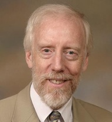
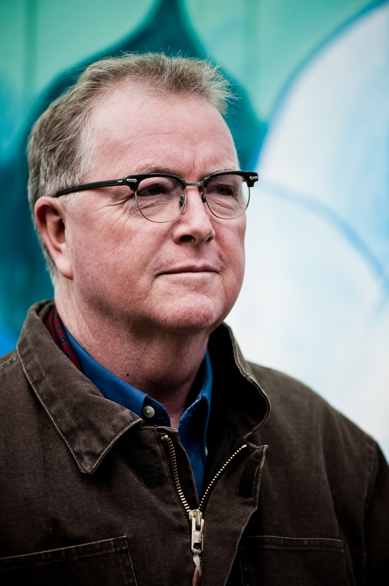

Climate Change: The Supporters & The Skeptics
Nowadays, it seems like everyone agrees that the science behind climate change is settled. Is that really the case? Has the earth really reached tipping point due to human-induced global warming? Two experts will delve into this theory, debating their contrasting viewpoints on this controversial issue. It's time for the hard facts to come out about global warming. It's now up to us to decide if climate change is really the most pressing crisis of our generation.
—Camille Angelo and Sebastian Marotta
Tom Harris is Executive Director of the science-based, apolitical group, the International Climate Science Coalition. He also lectures at Carleton University in Ottawa, Canada where he teaches a second year Earth Sciences course — “Climate Change, a geological perspective”. Tom’s basic education was in thermo-fluids and energy sciences and he has Bachelor and Masters Degrees in Mechanical Engineering. Tom has over 30 years experience working as a mechanical engineer and project manager, science and technology communications professional and media and S&T advisor to a former Opposition Senior Environment Critic in Canada’s federal Parliament.
For the past ten years Tom has been working intensively with a growing team of independent scientists and engineers to promote a sensible approach to range of energy and environmental topics, climate change in particular. His main focus has been the highly controversial science underlying these issues.
—Tom Harris, Executive Director (International Climate Science Coalition)
Mr. Bruce Cox’s relationship with Greenpeace began years before he became the executive director of Greenpeace Canada. Before coming to work for Greenpeace in 2004, Bruce spent two decades bringing his passion for the environment to provincial and federal politics and held positions with the Ontario ministries of Energy and Environment and at Toronto City Hall. Bruce is an enthusiastic advocate for change in Canada’s energy sector, promoting an energy revolution that will see the phase out of dirty technologies such as nuclear and coal while ushering in an era of climate friendly, renewable and sustainable alternatives. During Bruce’s tenure as Executive Director at Greenpeace Canada, he has led the organization through a period of significant growth including the opening of new campaigns on Oceans and Tar Sands and an increase in budget and staff of over 50 per cent.
—Bruce Cox, Executive Director (Greenpeace Canada)
—Camille Angelo and Sebastian Marotta
|  |
For the past ten years Tom has been working intensively with a growing team of independent scientists and engineers to promote a sensible approach to range of energy and environmental topics, climate change in particular. His main focus has been the highly controversial science underlying these issues.
—Tom Harris, Executive Director (International Climate Science Coalition)
|  |
—Bruce Cox, Executive Director (Greenpeace Canada)